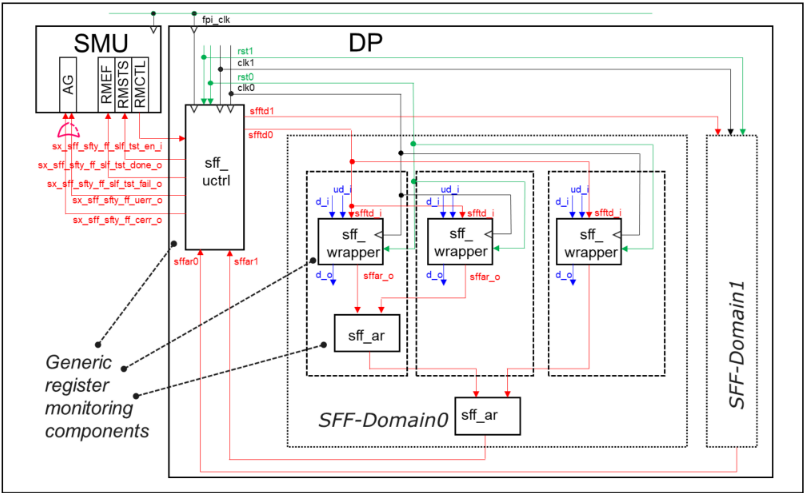
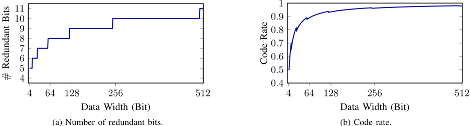
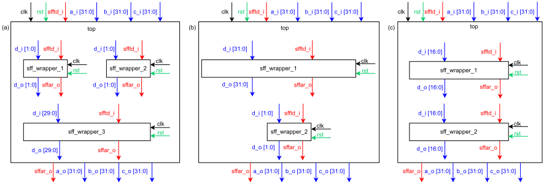
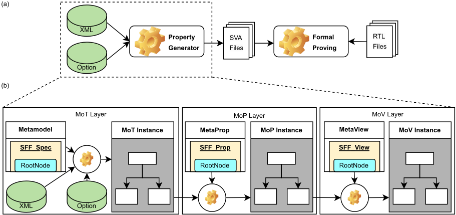
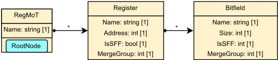

汽车SoC中面积优化Safety Register的自动化Formal验证
论文针对汽车SoC中按ISO 26262构建的safety register验证难题：SFF库提供ECC、DMR/TMR冗余与可选self-test等高度可配置安全组件，叠加将小安全寄存器合并以省面积的BFD/ILP优化后，集成过程极易出错，人工验证耗时且易漏。作者提出自动化formal验证框架：从XML规格提取信息生成Model of Things，按Configurable Parameters、Safety Mode（fault injection）、Connectivity等属性类构建Model of Properties，再经Model of View自动生成SVA交由商用formal工具证明；验证团队独立复现优化算法以交叉核对设计侧结果，并设置最大合并位宽32位约束避免状态爆炸。框架基于Python实现（ILP求解用PuLP），已应用于三个汽车SoC量产项目，验证工作量降低超过80%，所有属性在约束下均可收敛，并能快速发现面积优化设计中的bug；相比先前工作，其支持面积优化设计，并以完整register block同时覆盖功能与集成两方面验证。
汽车SoC中普通寄存器需按ISO 26262加装安全组件构成safety register；SFF库（SFF Wrapper、Alarm、Controller）高度参数化、安全结构组合灵活，且为降低面积开销采用BFD/ILP算法将小安全寄存器合并为较大寄存器，使集成过程复杂且易错；由于safety register几乎用于SoC所有模块、验证请求量大，人工验证耗时且易引入人为错误，需要更高效的验证方式。
提出规格驱动的自动化formal验证框架，分三步：Specification Extraction（从XML规格按预定义模型提取信息生成Model of Things，包含所选优化算法类型与合并结果）；Property Definition（定义Configurable Parameters、Safety Mode/fault injection、Connectivity等属性类，属性随优化算法自动适配，例如合并后数据宽度与连接关系自动更新）；Property Generation（基于Model of View生成SystemVerilog Assertions，配合商用formal property checking工具证明）。验证团队独立实现同一优化算法以交叉检查设计侧结果，可在早期发现算法bug；并从验证角度设置最大允许合并尺寸（32位）约束防止状态爆炸。框架用Python实现，ILP求解器为PuLP。
自动化验证方法有望将验证工作量降低超过80%（reduce the verification effort by more than 80%）
框架应用于三个汽车SoC的量产项目安全寄存器数据
在最大合并尺寸设为32位的约束下，所有属性均可收敛（all properties can still converge）
在短时间内发现了面积优化设计中的bug（enabling the discovery of bugs in area-optimized designs within a short time period）
与先前工作[3]对比：支持面积优化设计、以完整register block同时验证功能与集成两方面；小尺寸寄存器（4-bit/8-bit）占比大时优化后验证时间开销显著（如SoC3）
相比先前的safety register验证工作[3]：（1）支持面积优化后的设计，不再依赖规格与RTL之间的一对一映射；（2）从规格而非RTL提取设计信息，连接性检查通过formal工具进行，失败时可获得CEX trace便于调试（先前基于表检查虽快但调试困难）；（3）用完整register block同时验证功能与集成两方面，而先前工作分两阶段且功能阶段使用简化的安全架构；（4）属性由生成器根据优化算法自动更新，无需人工干预；（5）框架声明可复用于其他安全库，具有通用性与可扩展性。
相关度级别：high
命中能力域：2.5 功能安全与安全机制 | 2.7 CyberSec/自动化
理由：论文核心是ISO 26262安全机制（safety register：ECC/DMR/TMR冗余、self-test、alarm/controller结构）的验证，直接命中2.5域的'安全机制设计与验证、safety verification'核心技术；其'机器可读规格→自动生成SVA→formal证明'的自动化流程，以及设计与验证两侧独立实现同一算法做交叉检查的做法，与2.7域的工程自动化、Data Source到FMEDA/DFMEA自动化、DFT sign-off checklist思路高度契合。团队负责LPDDR/HBM4/UCie等高速IP的功能安全开发，IP中普遍存在需ECC/parity/冗余保护的寄存器与安全机制，该框架的方法论（规格化、属性自动生成、formal收敛约束管理）可直接迁移到IP安全机制的集成验证与安全文档证据生成。
建议动作：深入精读并做内部分享
Shuhang Zhang∗，Bryan Olmos∗†，∗英飞凌科技股份公司（Infineon Technologies AG）†莱茵兰-普法尔茨技术大学凯泽斯劳滕-兰道校区（Rheinland-Pfälzische Technische Universität Kaiserslautern-Landau）电子邮件：Firstname.Lastname@infineon.com
寄存器是片上系统（SoC）设计中的主要存储元件，在数字系统中维持状态信息和处理数据方面发挥着重要作用。根据 ISO26262 标准，这些寄存器需要具备高水平的可靠性和容错能力。因此，安全关键型应用要求在普通寄存器上配备额外的安全组件以构成安全寄存器，从而确保系统的稳定性和容错能力。然而，由于安全库所提供的高度可配置特性（例如参数化模块和灵活的安全结构），集成这些安全寄存器的过程复杂且容易出错。此外，为了解决安全寄存器所带来的开销问题，我们在其实现中应用了面积优化技术。然而，这种优化可能使集成过程更容易出现错误。为了避免任何集成错误，始终需要进行严格的验证，但在处理大量验证请求时，如果以人工方式实施验证，则既耗时又容易出错。为了应对这些挑战，我们提出了一种采用形式化方法对安全寄存器进行验证的自动化流程。结果表明，这种自动化验证方法有望将验证工作量减少 80% 以上。此外，它确保对该安全库的每一项要求都进行全面检查，这体现在能够更快地检测出缺陷。所提出的框架可复制用于其他安全组件的验证，从而能够及早发现潜在问题，并节省宝贵的时间和资源。
在现代片上系统（System-on-Chip，SoC）设计中，寄存器占据着至关重要的地位，因为这些基础组件不仅在数字系统中充当主要的存储单元，还负责维护状态信息。对于汽车应用而言，寄存器还必须在严格的安全性和可靠性标准下运行，例如 ISO26262 [1]，这就要求具备高度的一致性和容错能力。为满足这些严苛要求，普通寄存器通常配备安全组件，以确保汽车芯片能够有效应对故障，并在不损害整个系统安全性和可靠性的前提下维持其运行。为了在寄存器中实现这些安全特性，人们开发并使用了一种名为安全触发器（Safety Flip Flop，SFF）库 [2] 的专用安全库，它提供不同的安全组件，以在寄存器实现中实现各种安全特性。
然而，由于 SFF 库所提供的灵活性，这些安全寄存器的集成也是一个容易出错的过程。首先，这些安全寄存器本身是参数化的且高度可配置的。例如，该库支持从纠错码（Error Correction Code，ECC）到冗余等不同类型的寄存器保护方法，并提供可选的自测试特性。除安全寄存器外，该安全库还提供另外两类安全组件：报警器（alarm）和控制器（controller）。设计人员可以灵活地排列和组合这些组件，以创建各种安全结构。然而，这种源于参数化模块和灵活安全结构的可配置性给验证带来了重大挑战。此外，安全设计通常会导致可观的面积开销，这在成本上并不划算。为缓解这一问题，通常采用面积优化技术。尽管这些技术带来了好处，但面积优化寄存器的实现在集成过程中引入了额外的挑战。而且，人工实施的验证非常耗时，尤其是在处理大量验证请求时，因为安全寄存器几乎被用于 SoC 设计的所有模块中。因此，在我们的案例中需要一种更高效的方法。
认识到这些挑战后，我们提出了一种用于验证寄存器实现中安全组件的自动化流程。该方法旨在取代传统的人工验证过程，在显著减少所需时间和精力的同时，消除人为错误的可能性。通过引入自动化，我们可以大幅提高验证过程的速度和准确性。更具体而言，本工作的贡献包括：

本文其余部分的组织结构如下。第 II 节介绍 SFF 库，并重点阐述自动化形式化验证框架的动机。第 III 节将详细阐述所提出的形式化验证框架，第 IV 节将给出验证结果。最后，我们在第 V 节对这项工作进行总结。
在本节中，我们介绍有关 SFF 库的一些背景知识，包括面积优化方法以及与所提出框架相关的基本概念。我们还重点阐述了与安全组件验证相关的挑战。
图 1 给出了 SFF 库的详细框图。该库为在汽车芯片中构建安全寄存器实现提供了三个主要组件：SFF Wrapper、Alarm 和 Controller。下面对这些组件进行详细说明：

双模块冗余（DMR）和三模块冗余（TMR）。此外，安全寄存器还支持可选的自测试功能 [6]。
1) 动机：EDCECC 技术通常被用于安全寄存器中以提供容错特性，但它同时也会引入冗余数据位。鉴于安全寄存器会消耗可观的面积，设计者通常只保护关键位以节省面积。因此，设计中会实例化大量小型安全寄存器，这在面积上非常低效。为了说明这种面积低效性，我们以单纠错双检错（SECDED）码为例。冗余位的数量如图 2(a) 所示，码率（定义为 # DataBits # TotalBits）如图 2(b) 所示。这些图清楚地表明，较大的安全寄存器具有更高的面积效率。为了缓解这些小型寄存器带来的面积开销，将它们合并为较大的寄存器是一种常用的策略。
2) 优化策略：本节介绍基于不同算法的两种优化方法。第一种方法针对的是利用最佳适配递减（Best-Fit Decreasing，BFD）技术 [7] 求解装箱（bin-packing）问题，该方法仅考虑尺寸对小型安全寄存器进行分组。例如，原始设计如图 3(a) 所示，在寄存器块中实例化了三个 32 位寄存器，分别标记为 a、b 和 c。然而，这些寄存器中只有部分位受到安全寄存器的保护：寄存器 a 和 b 各有两位受到保护（sff wrapper 1 和 sff wrapper 2），而寄存器 c 有 30 位受到保护（sff wrapper 3）。我们要强调的是，在原始设计中，每个寄存器被限制为只能拥有一个安全寄存器，并且该安全寄存器不能包含来自其他寄存器的数据位。同时，其余未受保护的位未在该图中显示。图 3(b) 给出了 BFD 算法的优化结果，其中仅考虑所有安全寄存器的尺寸信息，将原有的安全寄存器替换为一个大寄存器和一个小寄存器。这里，数据宽度为 32 位的 sff wrapper 1 同时包含了寄存器 c 和寄存器 a 的数据位。与此同时，sff wrapper 2 保持两位的宽度，包含寄存器 b 的数据位。
第二种方法采用整数线性规划（ILP）技术 [8]，在分析中不仅纳入了所有安全寄存器的尺寸信息，还包括其综合后的面积数据。图 3(c) 展示了经 ILP 优化的设计。在这种情况下，算法给出的解决方案是使用两个中等尺寸的安全寄存器。在此方案中，sff wrapper 1 的数据宽度为 17 位，保护寄存器 c 的部分数据位。另一个安全寄存器则包含寄存器 c 的其余位，以及来自寄存器 a 和 b 的数据位。尽管基于 ILP 的方法在优化过程中需要综合数据，但对于同一工艺而言，这只是一次性的工作，不会引入显著的额外工作量。因此，基于 ILP 的方法能够拆分大型寄存器，并比基于 BFD 的方法实现更大的面积缩减。与原始设计相比，两种优化设计均获得了更高的面积效率。

正如前几节所述，验证挑战源于高度可配置的特性。这些特性可以分为两部分：
为了解决安全寄存器验证中的这些问题并获得穷尽性的验证结果，我们提出了一种自动化的形式验证框架。
正如前几节所述，安全库的高度可配置特性以及面积优化技术，使得安全寄存器的验证成为一项具有挑战性的任务。因此，我们主要通过所提出的验证框架来解决这一任务，如图4所示。所提出的验证流程如图4(a)所示，而属性生成流程如图4(b)所示。属性生成流程包括三个步骤：规范提取（Specification Extraction）、属性定义（Property Definition）和属性生成（Property Generation）。在该框架中，验证过程被分解为若干步骤，每个步骤考虑不同的抽象模型。本节将对每个步骤进行详细介绍。
安全寄存器的规范定义在一个XML文件中，所有安全寄存器信息将基于一个预定义的模型从该文件中提取，如图5所示，该技术类似于我们的寄存器生成器[9]中所采用的技术。提取的信息被存储在一个规范实例中，该实例称为万物模型（Model of Things, MoT），供后续步骤使用。此外，属性生成器还使用了一些额外的选项。例如，面积优化算法定义在这些选项中。由于不同的优化算法会生成不同的安全寄存器实例，因此在属性生成过程中考虑所选的算法至关重要。因此，优化结果（即指明哪些安全寄存器被合并到哪些组中）也是规范实例的一部分。需要强调的是，由于规范中仅包含算法类型，因此设计和验证团队必须各自实现一次相同的优化算法。在此阶段，我们的框架支持对设计和验证团队双方的算法实现之间的优化结果进行检查。这一能力可用于在非常早期的阶段检测算法缺陷。


Fig. 3. In Fig. 6, the parameter and fault-injection properties are shown. Fig. 6(a), (c), and (e) demonstrate the properties for parameter checking. In the original design, there are three registers instantiated, so all the data width parameters must be checked. However, with area optimization techniques, the number of safety registers is reduced, resulting in different generated properties based on the utilized algorithm. Since our property generator also implements the optimization algorithm internally, these merged data width values can be determined, thus updating the properties automatically. Additionally, in Fig. 6(b), (d), and (f), the safety mode properties, specifically faultinjection properties, are demonstrated for both original and area-optimized designs. Similar to parameter checking, the original design requires three properties to cover the fault tolerance features due to the instantiation of three safety registers, whereas area-optimized designs require only two properties. Although the number of properties for area-optimized designs is reduced in fault-injection mode, the proving time for each property increases. This is because a merged safety register implies a larger data width, resulting in a significant increase in the number of error states considered during the verification phase. The number of error states to be considered for EDCECC-based implementations can be formalized as follows:
where N d , N r and N e represent the number of data bits, redundancy bits and the number of supported errors, respectively. Based on this equation, it is evident that a larger data width leads to a significant increase in the state space. If the size of the merged register is too large, the state explosion will result in an unbounded proof, which should be avoided. Therefore, in our project, we introduce a constraint on the maximum allowed merging size from the verification perspective. The verification time for both the original and optimized designs will be discussed in detail in the results section.
Apart from the parameter and fault injection checking, the connectivity check is also critical for the optimized designs. The input and output connectivity checking for the original design is presented in Fig. 7(a) and (b). However, when the smaller registers are merged, the one-to-one mapping relationship between the safety registers and the original registers disappears. Consequently, the connectivity checking properties must be updated based on the optimization algorithms, making verification challenging even for small designs. Our proposed verification framework can automatically generate the adapted properties without requiring any manual effort. The adapted properties for the optimized designs can be found in Fig. 7(c) and (d) for input connectivity checking and in Fig. 7(d) and (f) for output connectivity checking.
property conn_top_input_safety_registers; 1 |-> top.a_i[1:0] == sff_wrapper_1.d_i[1:0] && top.b_i[1:0] == sff_wrapper_2.d_i[1:0] && top.c_i[29:0] == sff_wrapper_3.d_i[29:0]; endproperty
property conn_top_input_safety_registers_optimized_1; 1 |-> top.c_i[29:0] == inst_wrapper_1.d_i[29:0] && top.a_i[1:0] == inst_wrapper_1.d_i[31:30] && top.b_i[1:0] == inst_wrapper_2.d_i[1:0]; endproperty
property conn_top_input_safety_registers_optimized_2; 1 |-> top.c_i[16:0] == inst_wrapper_1.d_i[16:0] && top.c_i[29:17] == inst_wrapper_2.d_i[12:0] && top.a_i[1:0] == inst_wrapper_2.d_i[14:13] && top.b_i[1:0] == inst_wrapper_2.d_i[16:15]; endproperty
property conn_top_output_safety_registers; 1 |-> sff_wrapper_1.d_o[1:0] == top.a_o[1:0] && sff_wrapper_2.d_o[1:0] == top.b_o[1:0] && sff_wrapper_3.d_o[29:0] == top.c_o[29:0]; endproperty
property conn_top_output_safety_registers_optimized_1; 1 |-> sff_wrapper_1.d_o[29:0] == top.c_o[29:0] && sff_wrapper_1.d_o[31:30] == top.a_o[1:0] && sff_wrapper_2.d_o[1:0] == top.b_o[1:0] ; endproperty
property conn_top_output_safety_registers_optimized_2; 1 |-> sff_wrapper_1.d_o[16:0] == top.c_o[16:0] && sff_wrapper_2.d_o[12:0] == top.c_o[29:17] && sff_wrapper_2.d_o[14:13] == top.a_o[1:0] && sff_wrapper_2.d_o[16:15] == top.b_o[1:0]; endproperty
| Initial Design #SafetyReg | Verification BFD (32-bit) | Time Overhead ILP (32-bit) | |
|---|---|---|---|
| SoC1 | 1827 | 6.53% | 14.87% |
| SoC2 | 2392 | 71.05% | 84.32% |
| SoC3 | 49 | 144.27% | 131.02% |
| | Initial Design #SafetyReg | Verification BFD (32-bit) | Time Overhead ILP (32-bit) |
After defining all property classes, the properties can be generated based on different view requirements in the Model of View (MoV). In this work, we mainly focus on the use of System Verilog Assertions (SVAs). With these assertion files and the design files, the formal tool can be triggered to obtain the verification results.
在本工作中，我们使用来自三款汽车级片上系统（SoC）的安全寄存器数据，应用了所提出的框架。该属性生成框架基于 Python 实现，面积优化算法嵌入在同一生成器中。本工作使用的整数线性规划（ILP）求解器为 PuLP [10]。生成的属性使用商用属性检查工具进行验证。
1) 验证时间：尽管原始设计和优化设计定义了相同的属性类别，但生成的属性会因所选算法的不同而有所差异，这导致不同设计的验证时间各不相同。特别是，由于合并后寄存器的数据宽度更大，安全模式属性在优化设计中所消耗的时间可能显著多于原始设计。在表 I 中，我们给出了三款 SoC 在优化过程中将最大允许寄存器大小设为 32 时的验证时间开销（属性证明时间）。在本工作中，得益于验证团队提供的约束，所有属性仍能收敛。从该表可以明显看出，验证时间开销在不同的 SoC 和不同算法之间各不相同。根据我们的观察，如果小尺寸安全寄存器（如 4 位或 8 位）在设计中所占比例较大，则验证时间开销会非常显著。这是因为这些寄存器将被合并为一个 32 位安全寄存器，而与安全相关的属性会消耗显著更多的时间，SoC3 的情况即是如此。
| Area-Opt. | CEX Trace | Functional | Integration | |
|---|---|---|---|---|
| This Work | yes | yes | yes | yes |
| Work [3] | no | no | no | yes |
| | Area-Opt. | CEX Trace | Functional | Integration |
在讨论完我们提出的框架所得到的验证结果之后，我们希望将其与同样专注于安全寄存器验证的先前工作进行对比。对比项列于表 II 中。在先前的工作中，面积优化设计不受支持，其验证仍然依赖于规格说明与 RTL 代码之间的一对一映射。此外，先前的工作从 RTL 中提取设计信息以构建多个表格，使得连接性检查可以转化为表格检查，而无需调用任何形式化工具。尽管这种方法速度更快，但如果检查失败且需要反例（CounterExample，CEX）轨迹，调试将变得困难。不仅如此，先前的工作仅部分覆盖了安全寄存器验证，因为它将验证分为两个阶段：功能阶段和集成阶段。在功能阶段，由独立团队对简化的安全架构进行验证，检查其主要安全特性（如故障注入特性）。随后，基于生成的表格进行集成验证。相比之下，我们的工作使用完整的寄存器模块验证所有特性。功能与集成两个方面同时得到验证，从而确保全面覆盖，并降低遗漏任何潜在问题的风险。
安全寄存器是现代汽车级片上系统（SoC）中的关键组件，需要进行大量验证以确保其行为正确。安全特性往往会引入显著的面积开销，因此面积优化方法对于实现更高效的汽车级 SoC 至关重要。然而，面向面积的优化会带来额外的验证挑战，因为优化后的设计可能无法自然地符合初始规范。为了应对这些验证挑战，我们提出了一种自动化形式验证框架。该框架基于寄存器规范和所选的优化算法自动生成属性。这些属性可以无缝地与商用形式验证工具配合使用。该框架已应用于一个量产项目，显著减少了人工投入，并能在短时间内发现面积优化设计中的缺陷。最后，我们想强调的是，这种验证方法并不局限于我们内部的 SFF 库。该验证流程同样可以适配其他安全库，为跨不同项目和平台的安全寄存器验证提供了一种通用且可扩展的解决方案。